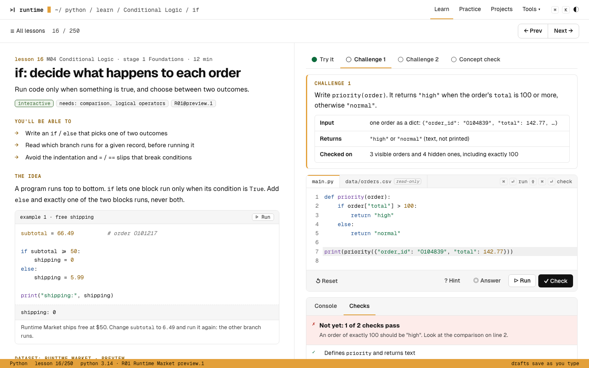
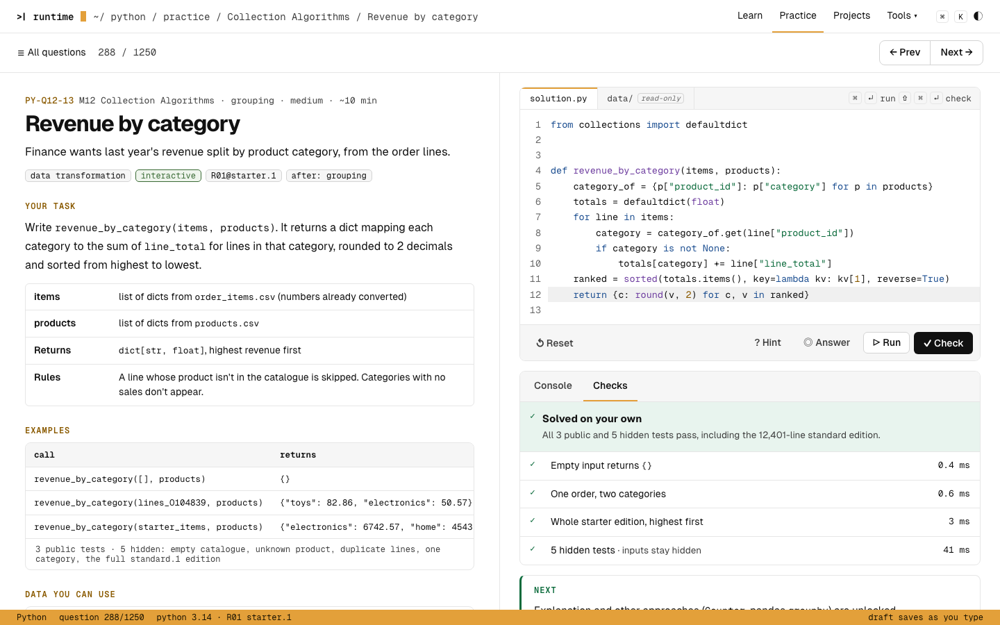
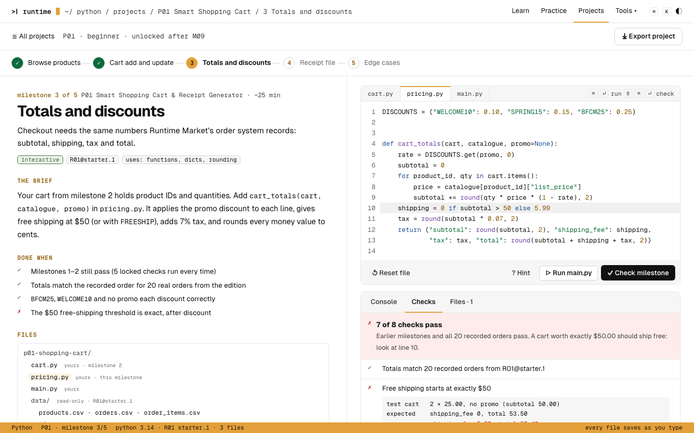
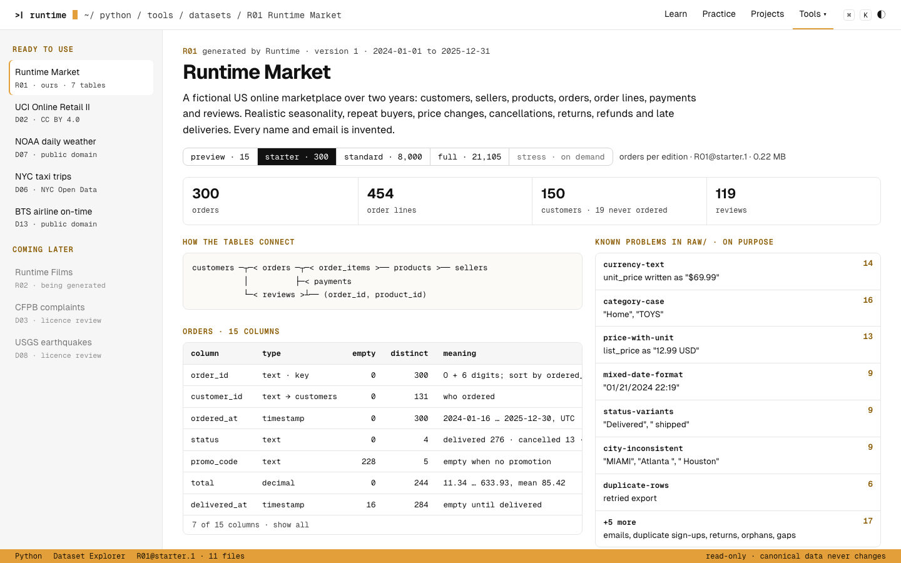
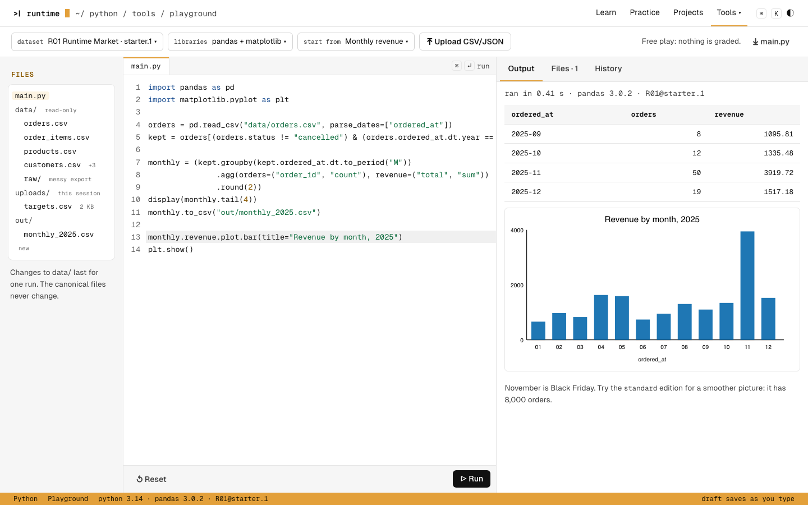

phase 1a for approval · docs/python/curriculum-plan.md §8
Python UI mockups
Five screens in the shipped SQL design family. Data in the screens comes from the real R01 Runtime Market editions. Run timings and the learner's code are illustrative.

Learn · lessonReading left, workbench right; failed check

Practice · questionPublic examples, hidden tests by kind; solved

Projects · milestoneMilestone rail, files, locked checks, deliverable

Tools · Dataset ExplorerEditions, dictionary, known problems, licence

Tools · PlaygroundDataset picker, files, table and figure output
Decisions to approve
- Same family as SQL. Header with mono path, amber active tab and status bar, split reading/workbench layout, amber mono section labels, Geist Sans and Mono. No new visual language.
- One workbench everywhere. File tabs (data files marked read-only), editor, Run / Check / Stop / Reset, then a results panel with Console and Checks tabs.
- Hidden tests. Shown as a pass count and their kinds ("empty catalogue, unknown product…"), never their inputs or expected values.
- Mode chips. Every lesson, question and milestone shows interactive, simulated or read-and-diagnose.
- Python signal colour. Green
#3a6b35 / #9fd39a on mode chips only, the way SQL uses blue. Alternative: no subject colour, amber only.
- Code ligatures off. Geist Mono would turn
>= into one symbol; learners need to see what they type.
- Projects. A milestone rail under the header, then brief, "done when" list and file tree on the left, multi-file editor and a deliverable preview on the right.
- Tools. The Explorer opens editions in the Playground or Database Lab; the Playground shows mounted data as read-only files.
All captures
screens/<screen>-<desktop|mobile>-<light|dark>.png · regenerate with node docs/python/mockups/shoot.mjs